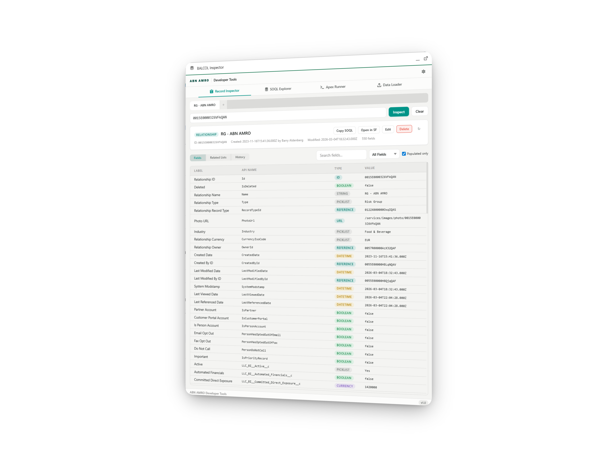

Salesforce Developer Toolkit
BALCOL Inspector
Four developer tools in one component — inspect records, write queries, execute Apex, and load data without leaving Salesforce.
Record Inspector
SOQL Explorer
Apex Runner
Data Loader
No installation required — already in your Utility Bar